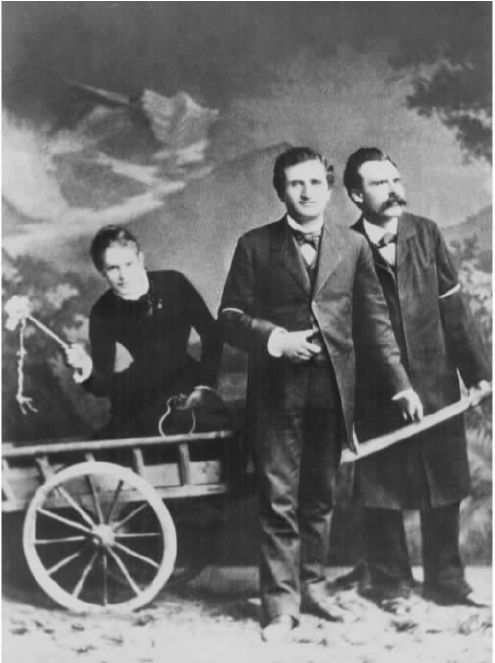

既然福柯对“系谱学”这一术语的借用已经公开宣布了他和尼采的联系，我们从一开始最好就弄清楚福柯所谓“尼采式的”意味着什么：
（《权力/知识》，“关于监狱的谈话”，第53-54页）
尽管有这番坦率的说明，评论家们还是普遍认为福柯的系谱学概念和尼采大抵相同，尤其是，福柯在《尼采，系谱学，历史》一文中对尼采的系谱学概念的详尽分析也被视做他自己关于作为历史研究方法的系谱学概念的明确表述。
可是，一个不容忽视的事实是，福柯的这篇文章是为了纪念他在巴黎高等师范学院的老师让·伊波利特而写，是一篇谦恭、简洁的文本精细分析，当年作为学生的福柯无疑曾为老师写了不少此类文章。这篇小文认真总结了尼采的系谱学观点，但很少用福柯自己的声音对该观点的合理性作出评论。鉴于此，我们不能简单地假定——虽然很多批评家和评论者已经这么做了——福柯自己赞同这篇文章提到的所有观点。在某些方面，福柯向读者展现的显然不是他自己的态度。例如，他决不会支持尼采经常援引主体的感情和意图［即学者们的竞争对抗，统治阶级的创造，“尼采，系谱学，历史”，《福柯主要作品集》（卷二），第371页］作为思想史发展的原动力这一说法，也不会赞同尼采把19世纪的退化衰落归咎于种族融合［《福柯主要作品集》（卷二），第384页］。
再者，如果我们认为福柯关于历史方法或者任何其他主题的一般性理论阐发不是仅仅服务于特定目的的工具，这是非常冒险的，这一点我在后文还将论及。无论如何，对于系谱学，福柯从未作过像《知识考古学》中那样细致的回顾性方法论分析。因此，与其从他散落的、有时前后不一致的方法论宣言中研究他的系谱学，倒不如从他的历史研究实践中理解这一方法更有成效。遵循这一思路，我们马上会发现，福柯持续运用系谱学研究方法的只有一部作品，即他那本关于监狱历史的《规训与惩罚》。虽然学者们也经常引用《性经验史》第一卷作为他系谱学研究的另一个范例，但我们不能忘记，这本书只是对一系列复杂的系谱学研究的一个概括性导论，那些更加复杂的研究在福柯有生之年并未完成，而这本书只是简单勾勒了那些研究完成之后可能呈现的图景。有时，福柯也会将自己的最后两部关于古代性经验的作品称为系谱学研究，但是，正如我们后文的分析将会显示的那样，这种说法主要是鉴于作品的伦理层面而非作品的历史分析模式，难逃牵强附会之虞。
那么，《规训与惩罚》中的历史研究方法又是怎样的？首先，我们要注意到，这种方法在很大程度上仍是考古学的。例如，福柯用四个考古学分析的范畴来谈论作为惩罚的囚禁这一明显具有现代特征的技术，这四个范畴是福柯在《知识考古学》中区分开的。囚禁将违法者视为属于一个新的类别的对象 ，这些对象 的特征符合关于犯人特征的概念 ，同时，它区分了不同的权威模式 （如法官的权威，假释裁决委员会的权威，犯罪学家的权威）和可供选择的多种策略性行为 （如用单独囚禁和劳动的不同方式对待囚犯）。然而，四个主要考古范畴的运用不仅停留在语言层面，它们还针对实践活动，这些活动超越了纯粹的语言表述而对对象造成了可见的变化。因此，《规训与惩罚》所关注的不仅是我们用以感知世界的语言（经过了考古学的分析），还关注能够改变世界的力量。
尽管考古学能够充分描述一项语言活动或非语言活动之下潜在的观念体系，但它并不适合用来描述某一实践活动的效果。它是一种结构性、共时性的分析模式，而非一种因果式、历时性的研究方法。在《事物的秩序》一书英文版的前言部分，福柯谈到了这一局限性，指出他的研究仅限于描述 各种思想体系，而无意于解释从一种体系到另一种体系产生的变化。“那些传统的解释 ——时代精神、各种技术影响力或社会影响力——在我看来大多与其说有效不如说神奇。”然而，福柯对此也提不出其他类型的解释，所以他认为“如果要勉强提出一种我自认为没有能力提供的解决办法，这样的做法不够谨慎”。“因此，”他说，“我把因果的问题搁置一旁，然后选择把自己限定在对转型本身的描述上，因为我相信，如果有朝一日需要构建一种关于科学变化和认识因果的理论，这样的描述将是不可或缺的一步。”（《事物的秩序》，第xiii页）
写《规训与惩罚》的时候，福柯已经有了一种他自认为行之有效的进行因果解释的方法来弥补考古学的不足。这就是他所说的系谱学：“本书旨在……梳理现存的科学——法律综合体的系谱。”（《规训与惩罚》，第23页）那么，在写完《事物的秩序》之后，福柯究竟又有何发现呢？
福柯的第一个发现是：思想的变化本身并非思想的产物。这一发现呼应了福柯早期对于“时代精神”和其他类似的准黑格尔式历史解释，如集体无意识等的摒弃。但是，从技术影响和社会影响方面来说，福柯对于历史学家标准的物质分析模式也并不垂青。这些动因太过模糊、笼统——如印刷术的发明、资产阶级的兴起，它们的解释力有一个限度，即我们要把历史看做朝向一个同等模糊、笼统的目标（如民主和世俗主义）行进的过程。福柯对以此类目标为焦点的宏大的目的论叙事持怀疑态度，转而提出了一些关于很多具体的、“小”的动因的叙述来取代这些宏大叙事，这些小的动因各自为战、独立运作，无意于取得整体结果。如果选择了这样的方法，我们就不会去讨论诸如“印刷术的发明”这样的问题，而会研究报纸和杂志制作和发行的整个综合流程（新型媒介、报道风格、造纸方法、订购方案，凡此种种）以及随之而来的广泛而又多样的社会、经济和政治效果。或者，我们可以引述福柯自己的一个例子来说明这一点：在《规训与惩罚》一书中，福柯分析了在众多别的因素当中，一种新型步枪的发明、对医院空间更有效的利用以及教授孩子们正确的书写姿势的变化，这些都在不经意间帮助建立了一种全新的社会控制体系。
最终的发现是：各种具体动因所指向的目标都是人的身体。与其说那些驱动历史的力量作用于我们的思想、我们的社会机制或者环境，倒不如说它们作用于我们个人的身体。例如，18世纪的惩罚方式是对身体的暴力侵犯：烙刑、肢解、处死；而19世纪的惩罚形式貌似温和但也同样是身体性的，如监禁、号令集合、强制劳动。囚犯必须接受一整套组织严密的改造方案，其目的是制造“驯顺的肉体”。由此，福柯式的系谱学就是对历史进行物质的、多重的、肉体的因果阐释。
那么，这样的系谱学是否是尼采式的？像福柯一样，尼采对系谱学也提出过很多纲领性的见解——虽然并非都前后一致，其中有些部分适用于福柯研究活动的要义。例如，尼采认为系谱学是追溯一种观念或实践的Hernuft（血统或世系），这就和福柯对身体的强调有相通之处。同样，尼采所描述的系谱学是自然主义的而非理想主义的，他特别指出，对道德的解释是一个起源于小的“偶然”动因的偶发现象。但是，尼采思考得最深入的系谱学（《道德的谱系》）和福柯在《规训与惩罚》中所展开的研究大相径庭。首先，尼采的作品丝毫没有福柯作品的严谨的学术风格和细致的资料引述。它不是严肃的档案研究的产物——这种研究被福柯描绘为“暗无天日、小心谨慎、耐心考证”［“尼采，系谱学，历史”，《福柯主要作品集》（卷二），第369页］——而是来自一个博学多才的业余爱好者坐在扶手椅中的沉思遐想。更能说明问题的是，尼采的系谱学背后存在着心理学动因（强者的骄傲和野心，弱者的怨愤，传教士的狡诈），这些和福柯关于身体的历史无甚关联。尼采将苏格拉底式的弱点和圣保罗式的憎恶作为重要的系谱学动因，而福柯的研究中没有对应的内容。此外，基督教教义——在尼采的论述中充当道德释义的主要来源——是一个全球性的坚不可摧的动因，毫不妥协地坚称要弃绝此世而企盼“来生”。仅作为历史研究方法来看，尼采和福柯的系谱学大异其趣。

图7 尼采（右），和他的朋友卢·萨洛梅以及保罗·雷在一起，1882年5月于卢塞恩
但同时，在一个根本层面上，福柯是彻底尼采式的，这个层面即他运用系谱学时的批判意图。尼采利用系谱学来证明，我们最尊崇的体制和惯例是“人性的，太人性的”。福柯的系谱学通过追溯这些体制和惯例的真正根源、阐发其正统含义及其与社会的自我理解相关的评价体系，来实现类似的解构。“历史的开端通常很卑下：不是鸽派人士的谦恭谨慎，而是一种讥讽挖苦，足以打破任何迷恋。”［《福柯主要作品集》（卷二），第372页］提供一套谱系就是要“明确那些偶然因素，那些细微之处的偏离行为——或者，相反地，那些完全的逆反之举——那些错误、不实的评价，以及有缺陷的推定，这些推定或许直接导致了一些今天依然存在且对我们有重要价值的事物”［《福柯主要作品集》（卷二），第374页］。这段引文是福柯对尼采的解读，但此处也能反映出福柯自己的观点。
对系谱学的批判性运用似乎陷入了一个本源性的谬误，因为它从某事物的卑微起源开始论证了它的价值缺乏。如果尼采是正确的，道德的确起源于“令人生厌的、心胸狭小的结论。具有可耻的源头”［《曙光》，第102篇；转引自《福柯主要作品集》（卷二），第370页］，那么，这又如何能证明道德不具有权威性呢？或者，如尼采所暗示的那样，为什么我们从“低等”动物进化而来这一事实会损害人类的尊严：“我们满心希望通过展示人的神授出身来唤醒人作为万物主宰的感觉；现在，这条路被封死了，一只猴子堵住了入口。”［《曙光》，第49篇；转引自《福柯主要作品集》（卷二），第372页］
然而，根源的问题不是系谱学家首先提出的。早在上帝在西奈山上将十诫授予摩西、世间遂将其奉为道德权威时，或者在女性的从属地位被认为是由她们的生理结构所决定时，源头的问题就已经出现了。进化的事实不能否定人类的尊严，但正如尼采的引文所暗指的那样，它会使“人类的尊严建基于我们是上帝的造物”这一论断失去依据。只要系谱学批评指向以已确立权威的来源为基础对这些权威的支持行为，它就可以避免本源性谬误。福柯断言，系谱学研究暴露了隐藏在那些看似必然的事物背后的偶然性，这一断言隐含了上述对系谱学的理解。这里，必然性（源于神的意志、人性，或是可能性的先验条件）是一个笼统的范畴，涵盖了所有那些从优先本源的角度证明社会行为和习俗之合法性的努力。
福柯用一句话概括了系谱学的价值倾向，说它是“关于现在的历史”（《规训与惩罚》，第30-31页）。这里面包含了两层意思。首先，历史研究的主题是那些在今天对我们具有权威性的规则、行为和习俗的根源。其次，研究历史的初衷不是为了理解过去本身，也不是为研究而研究，而是要理解和评价现在，尤其要借此揭穿那些不合理的权威之论。作为“关于现在的历史”这一思想的提倡者，福柯坚定地和尼采站在一起，不论那种认为他们使用了相同的历史研究方法的论断如何“歪曲”尼采的研究实践，如何“抱怨和反抗”。
福柯的系谱学的另一关键领域也显然照应了尼采的精神：关于知识和权力紧密联系的论断。这一论断提出了福柯的一个基本见解，即思想的变化不是由思想本身引起的，暗指思想变化的动因是控制个人行为的社会力量。尤其是，根据福柯关于知识的考古学看法，权力使得潜藏在我们知识之下的基本考古学框架（知识型或者话语形式）发生转变。在此，福柯选择了介于两种极端之间的一种立场，这两种极端一极是将知识简单地归结为权力（即认为“某人知道某种权力”意味着“社会力量迫使某人接受这种权力”），另一极是断言知识和权力互相独立（一种乌托邦式的观点，认为“某人知道某种权力”暗指“某人对该权力的接受和所有社会力量没有因果关系”）。获取知识并不简单等同于被权力所影响；正如谈到权力与知识时福柯曾经指出的那样，“我提出了权力和知识二者的关系问题，这一事实本身就说明我没有把二者等同 起来”（“批判理论/思想史”，第43页）。另一方面，拥有知识也不意味着可以完全逃离权力关系。
福柯还进一步宣称，权力对认知也有积极的作用，在限制和消除知识的同时也生产了知识。例如，古典经济学是资本主义社会经济制度的产物，它尽管受到自身根源的明显局限，还是创造了一种没有资本主义便不可能存在的关于该领域的独特知识体系（《知识考古学》，第186页）。此外，知识同样对引起知识的权力结构有转化作用。一个典型例子是，有些政府将其合理性建立在特定的知识体系（如某个民族的历史）上，但这些事实同样可以用来质疑政府。想一想在以色列的考古新发现可以用来支持或驳斥《圣经》中关于早期犹太民族的叙述，这些考古发现无疑具有政治意义。
知识和权力紧密相连的观点很容易使人联想到尼采那晦涩又有争议的概念：权力意志。尼采认为，权力意志是那些宣称表达着纯粹、客观的知识的思想体系（如柏拉图哲学和基督教神学）之根源。福柯对尼采谈论权力意志时有时采纳为语境背景的形而上理论化并不认可，但他显然心动于并借鉴了尼采从科学、宗教和其他认知权威的背后寻找权力的做法，那些认知权威都宣称自己纯粹建立在公正、无私的证据和论说的力量之上。
权力可以产生真正的知识——福柯的这一观点是否受惠于尼采，还没有明证。在《尼采，系谱学，历史》一文中，我们至少可以看到，福柯考虑的只是尼采式系谱学的负面影响。在福柯的解读中，尼采的权力总是暴力的。人类的确建立了各种规则（有社会规则，想必还有认知规则），但这些规则只是暴力统治的工具：
作为任何知识体系的不可或缺的组成部分，阐释对福柯眼中的尼采而言就是“对规则体系的暴力地或秘密地征用……其目的在于为其强加一个方向，使它服从于一个新的意志，强迫它加入一个新的游戏”［《福柯主要作品集》（卷二），第378页］。很难看出，完全表现为暴力和统治的权力如何能够生产知识。
另一方面，我们或许会发现，权力能够产生知识的观点令人难以置信。这样的疑问同样存在于一种经常见诸笔端的评论（有时表现为批评，有时表现为赞誉），即福柯的理论中没有客观、非相对化真理的容身之地。按照这种思想，如果我所相信的一切都是由社会的权力结构所决定的，那么，我的任何观念如何能获得相对于那个社会的标准之外的有效性？尽管有人赞扬福柯丢弃了过时、压抑的客观真理的概念，但看上去更有道理的是那些认为这样的立场具有自我驳倒性的评论者。设若所有观念只相对于它们所产生于其中的权力系统有效，那么福柯的相对主义最多也只具有这种有限的有效性。如果我们身处和福柯相同的权力王国，我们想必已经接受了他的立场。如果我们不身处这样的权力结构，他的观点显然和我们无关。
但为什么说权力不能生产真正的知识呢？当然，像洗脑这类情况对我们来说并不陌生，这种情况下，因权力关系而产生观念恰恰否定了获得知识的可能性。如果你通过剥夺睡眠、扰乱感官的方法使我相信某政党的目标是好的，即便这是真的，也不能说我知道这些。但是，这并不意味着不存在任何能够产生真正知识的训练和引导（我们可以称之为教育）。无疑，孩子们正是这样逐步接触到数学、历史和道德方面的基础知识的。随着我们一天天长大，一部分教授给我们的知识成为我们进行反思、评价的对象，而我们接受的大部分观念仍是社会条件作用的结果。当然，这样的例子主要存在于个人的有意识知识层面上（用福柯的词汇来说，即connaissance），而福柯关注的是潜藏于知识之下的考古学知识结构（savoir）。但两种情况有一个共同的原则：某一认知状态是权力作用结果这一事实，并不将该状态排除在知识的范畴之外。权力和知识在逻辑上是可以共存的。
无论我们对这样的总体论辩看法如何，福柯并不一定真正需要它。最终，福柯对通向激进的相对主义和怀疑主义的理论概括并不感兴趣。福柯偶尔也会有不够严谨的总体论断，但他只对局部的而非全局性的怀疑论负责。他的计划只是质疑非常具体的对认知性权威的主张：主要是心理学家和社会科学家所作的（甚至不是这类主张中的全部）。至于此外的其他诸多领域，如数学、物理、化学以及大部分的生物学，福柯显然并不介意。因此，他的各种系谱学所应该提供的，是我们怀疑某些具体的学科领域自称为认知权威的理由，而不应该是我们质疑所有此类主张的理由。它们应该向我们展示的是，精神病学或者犯罪学究竟有哪些不妥之处使它们成为“值得怀疑的学科”。随后我们会看到，这正是系谱学所做的。